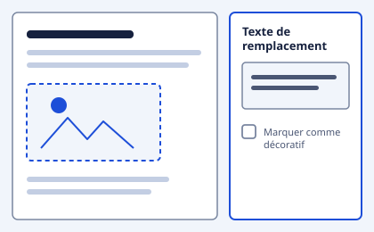

Pourquoi structurer ?
Un document Word bien structuré se lit plus vite et s'exporte correctement. La structure permet de générer une table des matières, de naviguer dans un document long, et de produire un PDF utilisable par un lecteur d'écran.
Les styles de titre
Dans Word, un titre n'est pas un texte agrandi et mis en gras. C'est un style, appliqué depuis le ruban Accueil.
Les styles à connaître
- Titre 1 — le titre du document, une seule fois
- Titre 2 — les grandes parties
- Titre 3 — les sous-parties
- Normal — le corps de texte
Le texte de remplacement
Chaque image porteuse d'information doit avoir un texte de remplacement. Clic droit sur l'image, puis « Modifier le texte de remplacement ».

Vérifier avant d'envoyer
Word intègre un vérificateur d'accessibilité, dans l'onglet Révision. Il signale les images sans texte de remplacement et les titres manquants.
Ressources
Récapitulatif
| Action | Statut |
|---|---|
| Styles de titre appliqués | Fait |
| Textes de remplacement | À faire |
| Vérificateur passé | Fait |
| Export balisé | À faire |
Progression
2 actions terminées sur 4 — 60 %